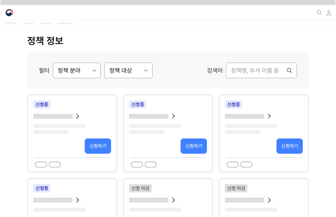
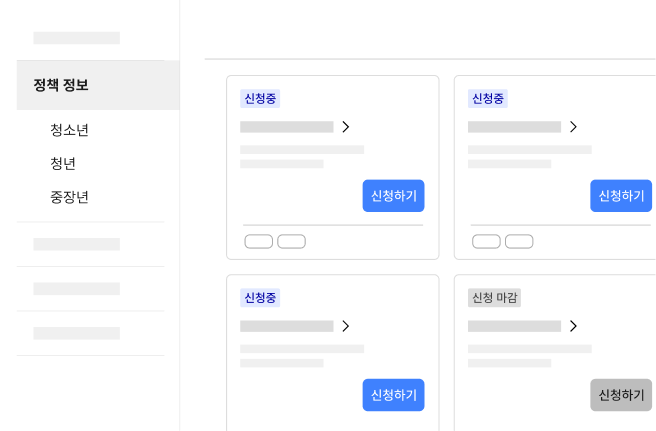
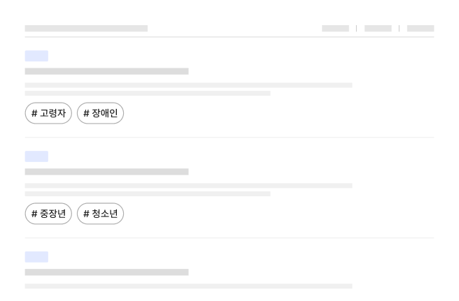

서비스 패턴 정책 정보 확인정책 탐색
정책 정보 확인은 디지털 서비스에 개제된 정부/기관의 행동 방침, 계획, 법률에 관한 정보를 사용자가 확인하는 과업이다.
구조
- 1. 필터링·정렬 컨트롤: 신청 서비스 목록을 필터링·정렬하는 데 사용되는 컨트롤
- 2. 페이지네이션: 신청 서비스 목록을 탐색하는 데 사용되는 컨트롤
- 3. 항목: 정보를 식별하기 위한 콘텐츠 집합으로 개별 항목에 대해 실행할
기능 관련 버튼, 상세 정보를
확인할 수 있는 탐색 링크가 포함될 수 있음
a. 제목: 서비스명을 보여주는 텍스트. 상세 화면으로 이동하기 위한 링크로 사용됨
b. 미리보기/요약: 서비스에 대한 기본적인 정보를 요약하여 보여주는 텍스트
c. 꺾쇠/화살표: 제목이 링크로 작동함을 안내하는 시각적 단서
d. 배지: 서비스의 이용 가능 상태에 대한 메타 데이터를 표시하여 다음 중 하나의 상태를 가질 수 있음
e. 메타 데이터: 신청 서비스에 부여된 여러 데이터 속성(예 - 분야, 연령, 소득 등)을 표시하는 텍스트
f. 저장 컨트롤: 관심 있는 신청 정보를 모아보기 위해 개인화된 기록을 저장하는 데 사용되는 컨트롤
사용성 가이드라인
-
모든 정책을 하나의 목록에서 탐색할 수 있는 수단을
제공한다. 권장
분류별 정책을 개별 목록으로만 제공하게 되면 사용자는 다양한 조건에 따라 정책을 탐색할 수 없어 필요한 정책 정보를 발견하는 데 어려움을 겪게 된다.
[모범 사례]
[피해야 할 사례]
 -
필터링 또는 검색 기능을 제공한다. 권장
목록에 필터링 또는 검색 기능을 제공하여 사용자가 여러 분류 체계에 해당하는 정책을 조회하는 과정을 통해 빠르게 원하는 정책을 찾을 수 있도록 한다.
-
정책의 대상/분야 등의 분류 체계를 표시한다. 권장
제공 유형, 지원 주기 등 정책의 분류 체계를 배지와 기타 메타 데이터로 제공하여 사용자가 참고할 수 있도록 해야 한다.
[모범 사례]
 -
새로운 정책 및 자료를 명확하게 구분한다.
새로 시행되는 정책이나 중요 정책에 "신규", "중요"와 같은 메타 데이터를 배지로 제공함으로써 사용자가 시의성 있는 정책 정보를 탐색할 수 있도록 도와야 한다.
[모범 사례]

접근성 가이드라인
-
공유/저장 컨트롤과 액션 버튼에 명확한 접근 가능한
이름을 제공한다.
스크린 리더 사용자가 컨트롤 요소를 단위로 탐색을 시도하는 경우, 목록에 동일한 레이블을 가진 컨트롤 요소가 다수 제공되었을 때 각 컨트롤 요소를 통해 기능을 실행하는 대상 정보를 명확하게 파악하기 어려울 수 있다. 각 컨트롤 요소에 title 속성 또는 aria-describedby 속성을 활용하여 접근 가능한 이름이 변별될 수 있도록 해야 한다.
- KWCAG 2.2 적절한 링크 텍스트
- WCAG 2.1 Headings and Labels (AA)
- WCAG 2.1 Label in Name (A)
- WCAG 2.1 Name, Role, Value (A)
관련 구성 요소
컴포넌트
기본 패턴
마크업 예시
| 1Depth | 2Depth | TYPE |
|---|---|---|
| 정책정보 | 목록 | html 화면 확인하기 |